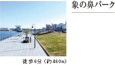
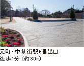
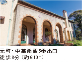

運河のほとりにそびえる3つのビル、クイーンズスクエア横浜。クイーンズイーストと[アット！]でショッピングを楽しめます。
運河沿いに整備されている公園。ベンチに座れば、運河越しに汽車道を眺められます。
日本の航海練習用の大型帆船。その美しい姿から、「太平洋の白鳥」や「海の貴婦人」などと呼ばれている。
飲食・雑貨・ブティックなど189店舗が入っている大型商業施設。
美術教育資料や明治期の浮世絵版画を含むコレクションがある美術館。

高さ119mの超高層オフィスビル。新宿アイランドタワーは姉妹施設になります。

ファッション、インテリア、雑貨、グルメなど世代問わず楽しめる商品を多数ご用意。
世界で初めての画期的な都市計画から生まれた未来志向の都市型立体遊園地。
個性的なショップ・レストランを連ねた複合型商業施設。屋上庭園もあります。
横浜赤レンガ倉庫は歴史的建造物から生まれた、楽しいショッピングやおいしいレストラン、様々なイベントが楽しめる施設です。コンサートホールやギャラリースペースなども備え、四季を問わず楽しめます。
カフェ、レストランなど約130店が集まる大型ショッピングセンター。施設内の広場では音楽イベントも開催されます。

1985年開業の横浜を代表する百貨店。催しものも多く、一日中楽しめます。

東急ハンズやレストランなどがある横浜駅西口のショッピングセンター。
最新のトレンドからファッション雑貨、レストランなどの飲食店も揃っているので買い物に便利。
多彩な専門店街・飲食店街・食品スーパーなどがある横浜のショッピングセンター。

※掲載の環境写真は平成25年10月に撮影したものです。※掲載の所要時間は、徒歩：1分80mにて算出し、端数は切り上げています。
横浜の代表的建造物の一つとして多くの市民に親しまれ、現在は公会堂として利用。
昭和9年に建てられた３代目。資料展示室では歴史資料を展示。
日本海運の歴史を紹介。企画展も開催しています。
ネオ・バロック建築を取りいれ明治37年竣工。神奈川の歴史資料を展示。
神奈川県歴史博物館やガス灯などのレトロな建物も残る観光スポットです。

横浜港発祥の地。象の鼻波止場を明治中期の形状に復元し、横浜港開港150周年となる平成21年6月2日に開園。
ベイブリッジや港を行き交う船の眺めがロマンチックな公園。 海外との豊かな交流を感じさせるモニュメントも多い。
横浜港における国内及び外国航路の客船の主要発着埠頭。横浜港の象徴的存在であると同時に、横浜市や横浜港における主要観光地としても知られている。
氷川丸は日本郵船が運航していた貨客船。船内には、氷川丸の歴史をお伝えする展示エリアなどがあります。
横浜の街のシンボル。展望階の高さは94mで、夜になると華やかにライトアップされて美しく横浜の夜を彩ります。
町内の大部分を占め、150周年以上の歴史がある。横浜を代表とする商業地の一つとして特に有名です。
横浜港を見渡せる高台に位置する。夜景においては横浜では屈指の美しさを誇っています。
緑の木立に囲まれて建つ風情も美しく、山手散策を楽しむ観光客を集めています。
山手の歴史的な雰囲気と元町の賑わいが感じられる全国初の立体都市公園。

イギリス人貿易商B.R.ベリック氏の邸宅。披露宴パーティー会場としても人気です。

春の桜の名所としても知られ、横浜山手の観光名所のひとつにも数えられます。
美味しいレストランや、お洒落なショップなどが集まったショッピングプラザです。
美しい庭園の中に咲き乱れるさまざまな品種のバラが訪れる人々の目を楽しませてくれます。
※掲載の環境写真は平成25年10月に撮影したものです。※掲載の所要時間は、徒歩：1分80mにて算出し、端数は切り上げています。
| ファミリーマート 横浜元浜町 |
2分（約 120m） |
|---|---|
| ヤマザキデイリーストアー 横浜本町店 |
2分（約 130m） |
| 横浜アイランドタワー | 5分（約 340m） |
| 横浜ワールドポーターズ イオンシネマみなとみらい |
6分（約 470m） |
| 食品館あおば関内駅前店 | 8分（約 590m） |
| クロスゲート | 8分（約 630m） |
| 横浜赤レンガ倉庫 | 10分（約 730m） |
| 桜木町ぴおシティ | 12分（約 900m） |
| コレットマーレ/ 横浜ブルク13 |
12分（約 960m） |
| 横浜ランドマークタワー | 13分（約 980m） |
| ランドマークプラザ | 14分（約 1,080m） |
| ちぇるる野毛 | 15分（約 1,200m） |
| クィーンズスクエア横浜 | 16分（約 1,270m） |
| クィーンズイースト | 17分（約 1,340m） |
| MARK IS みなとみらい | 19分（約 1,450m） |
| 日本郵船歴史博物館 | 1分（約 50m） |
|---|---|
| 県立歴史博物館 | 4分（約 270m） |
| 横浜市開港記念会館 |
5分（約 380m） |
| 横浜開港資料館 |
6分（約 470m） |
| 関内ホール |
6分（約 450m） |
| 日本新聞博物館 横浜情報文化センター |
7分（約 560m） |
| 神奈川県民ホール | 11分（約 840m） |
| KAAT神奈川芸術劇場 | 11分（約 870m） |
| 横浜美術館 | 17分（約 1,340m） |
| 横浜市中央図書館 | 19分（約 1,490m） |
| 市立本町小学校 | 14分（約 1,080m） |
|---|---|
| 市立横浜吉田中学校 | 13分（約 1,030m） |
| アスク馬車道保育園 | 3分（約 170m） |
| ポピンズナーサリー スクール馬車道 |
3分（約 200m） |
| チャーフルランド（保育園） | 6分（約 410m） |
| リトルフィート関内園（保育園） | 6分（約 420m） |
| 野毛山幼稚園 | 21分（約 1,610m） |
| 三菱東京UFJ銀行 横浜中央支店 |
2分（約 110m） |
|---|---|
| みずほ銀行 横浜支店 | 2分（約 110m） |
| 横浜銀行 関内支店 | 4分（約 260m） |
| 三井住友銀行 横浜支店 | 4分（約 270m） |
| 横浜銀行 県庁支店 | 6分（約 440m） |
| りそな銀行 日本大通出張所 |
10分（約 760m） |
| 象の鼻パーク | 6分（約 460m） |
|---|---|
| 横浜公園 | 9分（約 710m） |
| 日本丸メモリアルパーク | 10分（約 730m） |
| 山下公園 | 10分（約 760m） |
| よこはまコスモワールド コスモクロック21 |
10分（約 770m） |
| 新港パーク | 10分（約 780m） |
| 横浜港大さん橋 | 11分（約 830m） |
| カップヌードルミュージアム | 11分（約 830m） |
| 赤レンガパーク | 11分（約 850m） |
| 横浜スタジアム | 11分（約 860m） |
| 大通り公園 | 13分（約 990m） |
| 横浜マリンタワー | 16分（約 1,270m） |
| 美術の広場公園 | 17分（約 1,360m） |
| 野毛山公園 | 19分（約 1,480m） |
| 掃部山公園 | 19分（約 1,500m） |
| 野毛山動物園 | 23分（約 1,830m） |
| 横浜本町郵便局 | 2分（約 130m） |
|---|---|
| 神奈川県警察本部 | 2分（約 160m） |
| 横浜第2合同庁舎 | 3分（約 180m） |
| 横浜税関 | 5分（約 340m） |
| 神奈川県庁 | 6分（約 440m） |
| 横浜港郵便局 | 7分（約 550m） |
| 横浜市役所 | 10分（約 750m） |
| 中区区役所 | 11分（約 850m） |
| かながわクリニック | 1分（約 20m） |
|---|---|
| 馬車道内科クリニック | 2分（約 130m） |
| よしずみ耳鼻科クリニック | 3分（約 200m） |
| 愛誠歯科 | 3分（約 240m） |
| 馬車道慶友クリニック | 4分（約 280m） |
| さいとう歯科 | 5分（約 350m） |
| 関内ケンクリニック | 5分（約 400m） |
| 宇田川内科・ 小児科診療所 |
7分（約 520m） |
| 横浜市役所健康福祉局 夜間急病センター |
10分（約 780m） |
| ふれあい横浜ホスピタル | 13分（約 1,010m） |
| けいゆう病院 | 19分（約 1,500m） |

※距離表示は、建設地からの概則距離（地図上）です。実際とは多少異なる場合がございます。
※徒歩分数は1分＝80ｍで換算したもので端数は切上げています。
※掲載の環境写真は平成24年10月に撮影したものです。